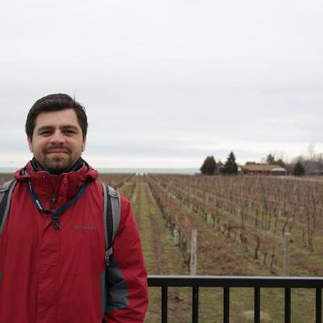

Clayton G C Santos
M.Eng.
🪪 Sobre:
Cristão, engenheiro de soluções, professor, pai e baterista.
Neste sítio estarão meus contatos atualizados,
divagações, projetos e coisas interessantes para
quem é intusiasta da tecnologia.
Escovo bits como um romântico...
👨💻 Experiência Profissional
Engenheiro de Soluções;
Professor Universitário;
Perito Criminal;
Consultor em Tecnologia da Informação;
Professor Universitário;
Perito Criminal;
Consultor em Tecnologia da Informação;
👨🏫 Formação Acadêmica
Graduação em Informática - Universidade Federal de Rondônia;
Mestrado em Engenharia Elétrica - Universidade de Brasília;
Pós-gradação em Planejamento Estratégico - IFRO;
Mestrado em Engenharia Elétrica - Universidade de Brasília;
Pós-gradação em Planejamento Estratégico - IFRO;
📚️ Especializações e Competências
Ciência de Dados;
Infraestrutura de Redes e Sistemas;
Segurança da Informação;
Machine Learning;
Inteligência Artificial;
Visão Computacional;
Forense Digital;
Infraestrutura de Redes e Sistemas;
Segurança da Informação;
Machine Learning;
Inteligência Artificial;
Visão Computacional;
Forense Digital;